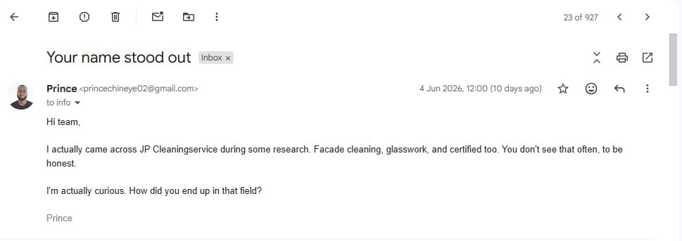
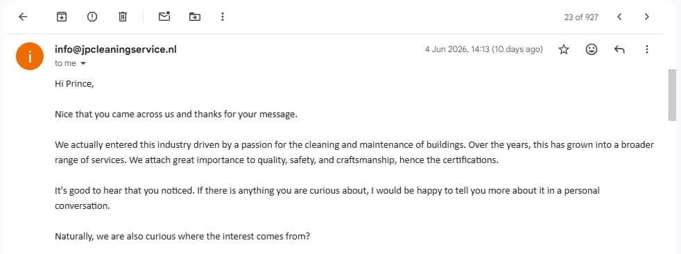
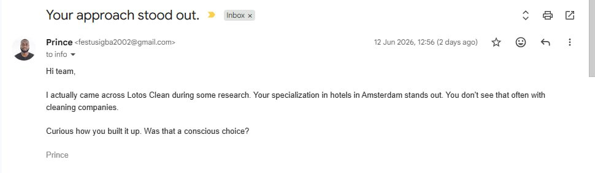
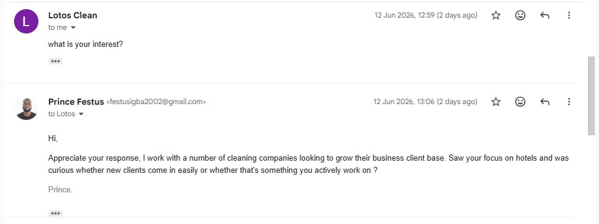
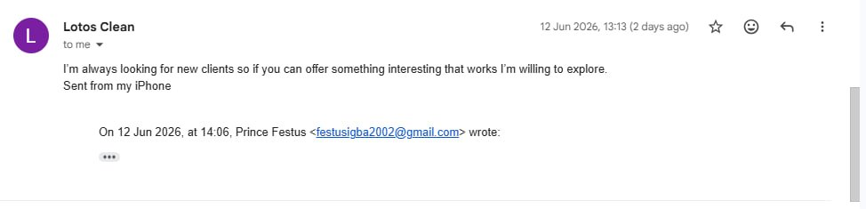
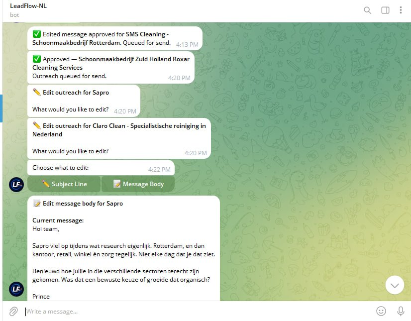
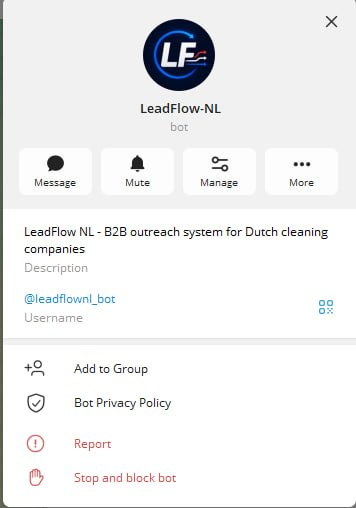

LeadFlow NL
An AI-powered prospecting and outreach platform designed to identify qualified businesses and generate highly personalised cold emails at scale.
What LeadFlow does.
In 5 days, I built a system that finds Dutch cleaning companies, researches each one individually, and sends their owner a cold email that reads like it was written by someone who actually looked at their business. It follows up, tracks replies, and reports daily. Research, drafting, scheduling, and follow-up are automated. Human involvement is limited to final approval before emails are sent.
The emails follow strict rules: maximum 6 lines, one genuine observation, one question, no pitch, no mention of services. The goal is to start a real conversation, not close a sale in the first message.
Why generic outreach fails.
Most cold outreach is either manual and slow or automated and generic. LeadFlow was built to automate personalisation without sacrificing quality.
From manual to automated.
I was manually researching companies, writing outreach emails, and tracking replies. The process worked but didn't scale. LeadFlow was built to automate research, drafting, and follow-up while keeping a human approval step for quality control.
Early results.
2 replies from 9 emails sent in initial testing (22% reply rate). Sample size is intentionally small. Larger-scale testing is ongoing. These results indicate early signal, not statistically proven performance.
Real emails. Real replies.





Automation scales. Humans judge.
Every email goes through a Telegram approval gate before it's sent. The operator sees the draft, can approve it as-is, edit the subject line, rewrite the body, or reject it entirely. Nothing leaves without a human sign-off.


How lead discovery, research, AI generation, approval, and delivery work together.
Six stages, fully automated.
What was actually hard to build.
The choices that define the product.
The stack behind it.
What I bring to a team.
LeadFlow isn't just a technical project. It's proof that I can identify a real business problem, design a solution from scratch, build and deploy it in production, and iterate until it works. I built this in 5 days, working alone. The system automates lead discovery, research, drafting, approval workflows, and follow-up scheduling while providing monitoring and failure alerts.
If you're looking for someone who ships, thinks in systems, and doesn't stop at a working prototype. That's what I do.